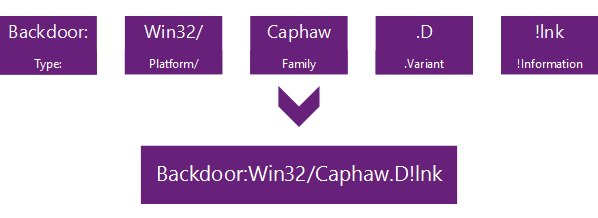

Malware is broadly defined as any malicious software. There are many different types of malware: Viruses are parasitic, in that they use or corrupt other files, can be polymorphic (changing with each iteration) and self-replicating (Worms). Trojans, named after the Greek legend, allow backdoor access or are otherwise designed to grant another user or software access to information. Potentially Unwanted Programs are programs are programs that are considered unwanted by the user, though they may not have any qualities of a virus or trojan. Adware, Spyware and other bundled software are examples of PUP. Security organizations send and safe malware in zips, encrypted with the key “infected”.
A malware's hash is used to identify each malware program. Antivirus software uses malware hashes to identify infections. The current standard is to use a MD5 checksum of the file.
An imphash is the hash of a malware’s import libraries and can be used to classify malware into families.
Malware naming convention is intended to create a human-readable way to distinguish malware. Though naming can vary between institutions, the Computer Antivirus Research Organization provides the following standard:

Source: https://www.microsoft.com/en-us/wdsi/help/malware-namingA waterhole attack is an attack into a system through some weaker intermediary. For example, spoofing an email of a client or vendor.
I was surprised to learn that basic Windows System tools can be effectively used to identify and track malware.
An APT is a targeted attack against a specific entity by an individual or organization.
An APT Kill Chain typically involves the following steps:
Dynamic Analysis is done by letting malware execute as intended in a controlled environment, and observing its behavior and changes in the system. This is often done with a Virtual Machine, using the system tools mentioned above. However, some malware is designed to detect whether its running in a VM, and will terminate execution. If the VM is insufficient, the malware can be run and observed on a real computer, called a goat
.
Static Analysis is done by inspecting the malware file itself. By examining the code directly with a program like FileInspector or IdaPro, the malware can be reverse-engineered.
String Dump is a method of SA done by printing out the strings stored in the code. This can provide a clue as to what the malware is doing. For example, if the code contains a web address, it likely is going to make a request to that address. However, malware code often obfuscates its strings by encrypting them in some way. They can use bit flipping, ROT13 (rotating chars), Base64 (technically not encryption), or XOR cipher. Depending on the method of encryption, finding the strings can be trivial or extremely difficult.